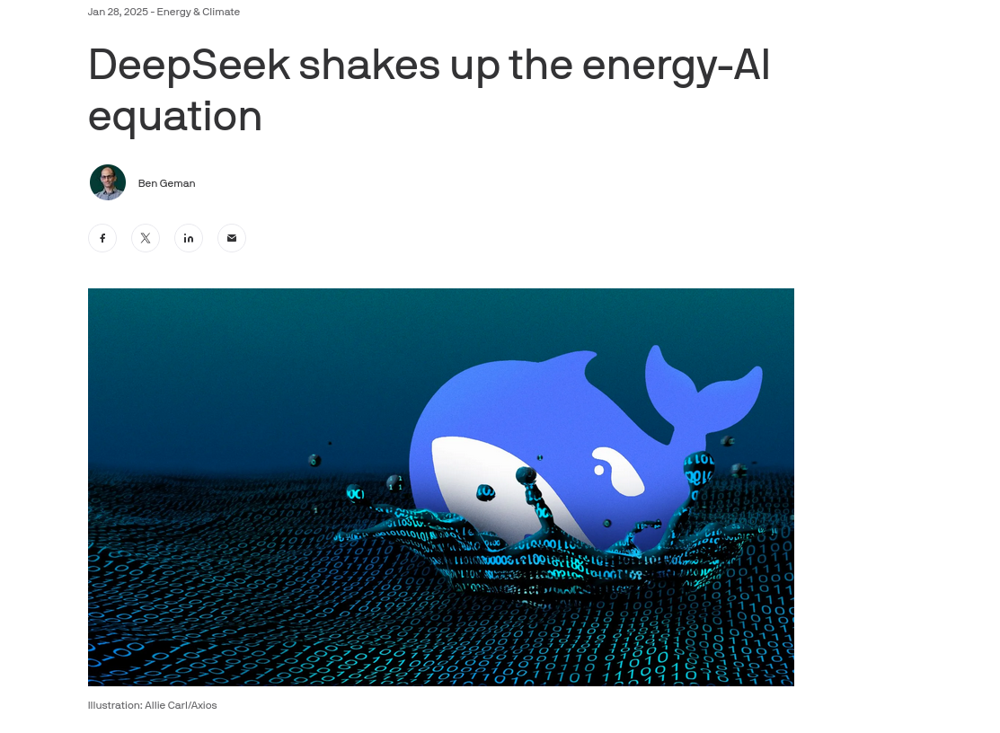

Engineering greener software
SAC'25, Catania
Computers need power to operate
Boy, do they need power...
Moore's law is dead

You can't make them faster
Make it greener
Tutorial organization
Antipasti: Energy/power and all that
Primo piatto: How and where power is spent
Secondo piatto:Measuring energy expenses
Dolci: Making programs greener
System operations draw power
Measured in watts
... And they consume energy
Measured in joules
Energy = power x time

Letter substitution cipher introduced by Greeks

Polybius square letter → 2-number coordinate
Caesar's code is similar
Provenzano, il capo di tutti capi, used a variant of this for his messages
Cryptanalisis introduced by Al-Kindi, 9th century
Also reintroduced Greek philosophy to the Muslim world
Muslim Sicily: a hub for Muslim philosophy
Did Sicily open cryptanalysis to the world?
Symbol frequency in Python
def eliminate_whitespace_and_punctuation(text):
translator = str.maketrans(
'', '',
string.whitespace + string.punctuation + '«»“”‘’'
)
text = ''.join(filter(str.isalpha, text.translate(translator)))
return ''.join(
c for c in unicodedata.normalize('NFD', text)
if unicodedata.category(c) != 'Mn'
)
def calculate_frequency(text):
return Counter(text.lower())Analyzing "I promessi spossi"
| Symbol | Frequency | Symbol | Frequency |
|---|---|---|---|
| æ | 1 | p | 30449 |
| k | 3 | u | 36561 |
| y | 8 | d | 38203 |
| w | 16 | c | 48117 |
| j | 22 | s | 56020 |
| x | 139 | l | 57179 |
| z | 7803 | t | 62603 |
| q | 7997 | r | 67736 |
| b | 10036 | n | 74764 |
| f | 10811 | i | 98025 |
| h | 13831 | o | 99056 |
| g | 17556 | a | 118096 |
| v | 23585 | e | 123592 |
| m | 24233 |
Do we know how much energy does it consume?
We need to understand
What are we measuring
How can we measure it
How can we measure our stuff
We do need to measure
What are we measuring
Socket ~= Processor → x cores → y threads
DRAM/Memory
GPUs
Other units: Apple Neural Engine Architecture, for instance.
Cores are not homogeneous
P cores for performance, e cores for (energy) efficiency
Apple Silicon M3 Ultra: 28 p-cores, 8 e-cores
And they are in different states
Operating states: C states
In C0 state (Fully turned on): different P-states change frequency and voltage
Baseline: system does its best to save energy
Processors run machine code instructions
They take different number of cycles and consume a different amount of energy
And they use on-chip caches, instructions decoders and so on
we need our applications to ride this system
And extract as little power from it as possible
Good engineering can help
It's the system that draws energy
You can only measure the whole system
Yet you need to measure a single application
Measure energy drawn from the external plug
Problems: measuring the whole system (hard disk, external graphics card)...
... And synchronization
Good ones can be €€€
Use system APIs and interfaces
Using seudo-registers or system calls to place estimates
IOreport for Apple
Running average power limit: RAPL
Prevalent in the Intel world (including AMD)
Provides registers that estimate energy usage
PKG or "package",
includes all on-chip energy consumption
Intel chipsets have more granularity: memory, core/PP0, uncore/PP1, "PSys"...
Los perfiles energéticos se hacen para programas completos
Hay que extraer las funciones que más CPU usan para medir el consumo
Una metodología para medir consumo
Ejecución con parámetros diferentes
Un número fijo de llamadas
Repetición para significación estadística
Es imposible medir solamente nuestro programa
Se establece una línea base
La estadística es importante
Generación de cromosomas en C++
#include <tr2/dynamic_bitset>
#include <random>
std::vector<std::tr2::dynamic_bitset<>>&
generate_chromosomes(unsigned int number_of_elements, unsigned int length){
std::minstd_rand engine;
static std::vector<std::tr2::dynamic_bitset<>> population;
population.resize(number_of_elements);
for (unsigned i = 0; i < number_of_elements; ++i)
{
std::tr2::dynamic_bitset<> bits(length);
for (unsigned i = 0; i < length; ++i)
bits[i] = engine() & 1;
population[i] = bits;
}
return population;
}Compilamos con
g++-14
-march=native
-std=c++2a
-Wall
chromosomes.cc generate_chromosomes.cc -o chromosomesHay que medir las prestaciones
#!/usr/bin/env sh
FILENAME=$1
for i in 512 1024 2048
do
echo "Size ${i}"
OUTPUT="${FILENAME}-${i}.json"
echo "Saving to ${OUTPUT}"
pumas run -i 100 --json > $OUTPUT &
for j in $(seq 15)|
do
C++/chromosomes $i
done
kill $!
done
Midiendo en un Mac
cat test-512.json | jq ". | .metrics.consumption"{
"ane_w": 0,
"cpu_w": 4.5013532638549805,
"gpu_w": 0.02891661413013935,
"package_w": 4.530270099639893
}Más fácil con pinpoint
sub process_pinpoint_output {
my $output = shift;
if ($output !~ /0.00\s+J/) {
my ( $gpu, $pkg ) = $output =~ /(\d+\.\d+)\s+J/g;
my ( $seconds ) = $output =~ /(\d+\.\d+) seconds/;
return $gpu, $pkg,$seconds;
} else {
return 0,0,0;
}
} Hay que instrumentar la medición de consumo
Y trabajar con estadísticas
Esta operación común permite establecer la línea base
Pero nos interesa una función específica
Midiendo operaciones específicas
import { hashify } from "https://deno.land/x/saco@v0.0.2/index.js";
import { countOnes, generateChromosomes } from "../lib/utils.js";
const size = Deno.args[0];
const NUMBER_OF_CHROMOSOMES = 40000;
console.log("Size ", size);
const population = generateChromosomes(size, NUMBER_OF_CHROMOSOMES);
const fitnessArray = [];
population.forEach((c) => {
fitnessArray.push(countOnes(c));
});
Cualquier cambio en la implementación de un algoritmo cambiará su perfil energético
Ese efecto no tiene por qué ser intuitivo
Cambiar CPU por memoria, por ejemplo
Conviene acompañar la intuición con la medición
Medida más simple: cambios en la compilación/intérprete
Compilación sin info depuración/optimización
Menos uso de memoria, menos CPU
Cambio en el uso de instrucciones específicas de procesador
g++-14
-march=native
-std=c++2a
-Wall
chromosomes.cc generate_chromosomes.cc -o chromosomesLos compiladores permiten decidir qué instrucciones se incluyen en el ejecutable
Y opciones del compilador
g++-12
-march=native
-Ofast
-std=c++17
-Wall
chromosomes.cc generate_chromosomes.cc -o chromosomesArgumentos de JVM permiten cambiar el comportamiento energético
-server para optimizar, -X para diferentes parámetros
Python permite engancharlo con perf
python -X perf programa.py